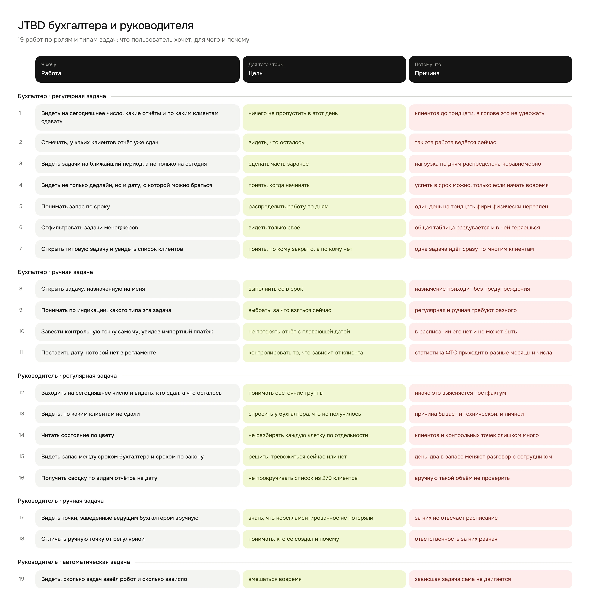
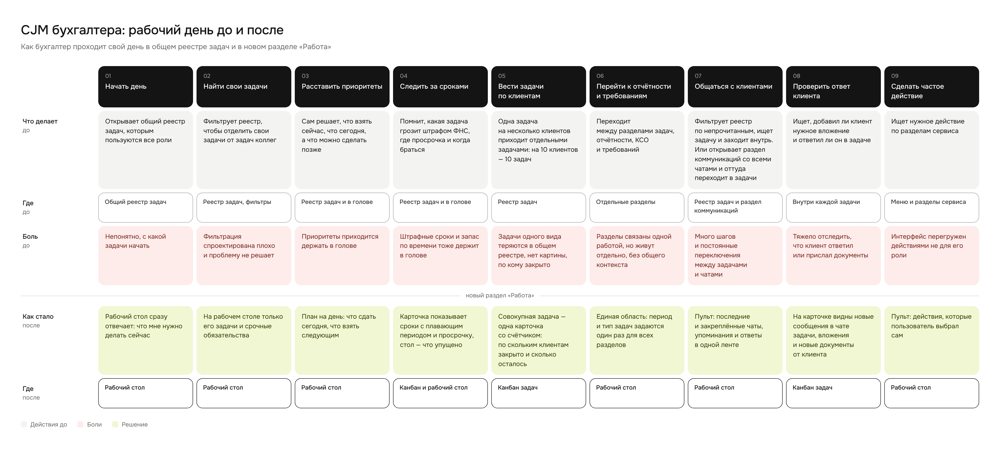
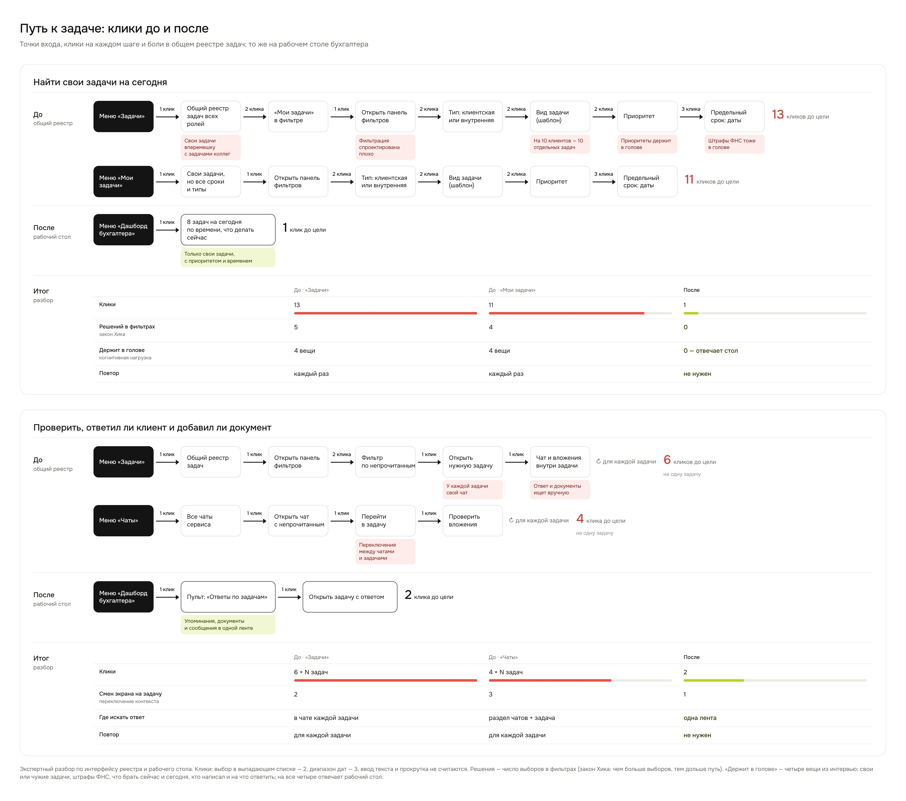

Единая область «Работа»
- Проблема
- Связанные процессы жили в разных разделах.
- Решение
- Одна область с общим периодом и типом задач, разделы внутри.
- Почему
- Общие параметры задаются один раз.
Иллюстрация

Платформа для бухгалтерских компаний. Сервис быстро рос, а удобство для бухгалтеров отставало.
Три роли с разной ежедневной работой:
Ведёт задачи клиентов и общается с ними в чатах.
Следит за просрочками, рисками и загрузкой.
Сопровождает клиентов компании.
Все роли работали в одной огромной таблице задач. Фильтры проблему не решали.
Задачи, отчётность, КСО и требования лежали в разных разделах, хотя это одна работа.

Один интерфейс на все роли. Бухгалтер не понимал, с какой задачи начать.
У каждой строки свой чат, а бухгалтер сам искал ответы на вопросы:
Руководителю не хватало общей картины, а интерфейс был перегружен лишними действиями.
Итог — когнитивная нагрузка: время уходило на то, чтобы приступить к работе.
Спрашивала не о желаемых функциях, а о том, как люди работают и на чём принимают решения.
разделы и связи между ними
бухгалтеры, руководители, менеджеры
для каждой роли
по реальным людям
проверена на тестировании
новая навигация



Сроки, просрочки и то, что можно отложить.
Бухгалтеры постоянно переключаются между задачами и чатами.
Бухгалтеру — дела на день, руководителю — контроль, менеджеру — сопровождение клиентов.
Общие период и тип задач легли в основу области «Работа».
Собрала схему архитектуры под работу каждой роли, затем схему процесса: на каждый шаг — референсы (Zendesk, Front, Intercom, Битрикс24) или своё решение.
Дальше — про бухгалтера: для него я спроектировала новый флоу.
Показывала решения пользователям и давала кликабельные прототипы.
От общей таблицы — к рабочим пространствам под сценарии ролей.
Область «Работа», рабочий стол, канбан и пульт в работе у сотрудников.
Новый формат оценили положительно.
Локальную задачу про чек-лист превратила в новую архитектуру раздела. Её согласовали директор и клиенты, раздел внедрён и работает.
Один компонент пульта закрывает две роли: команда развивает одно рабочее место, а не два.
Сроки и просрочки видны заранее. Для бухгалтерской компании штраф клиента — это деньги и доверие.
Время уходит на работу, а не на поиск задач. Это основа, чтобы расти без пропорционального найма.
Цифры 13 → 1 и 4 → 0 — экспертный разбор по интерфейсу до и после. Дальше эффект меряем по времени до начала работы, доле просрочек и обращениям в поддержку.